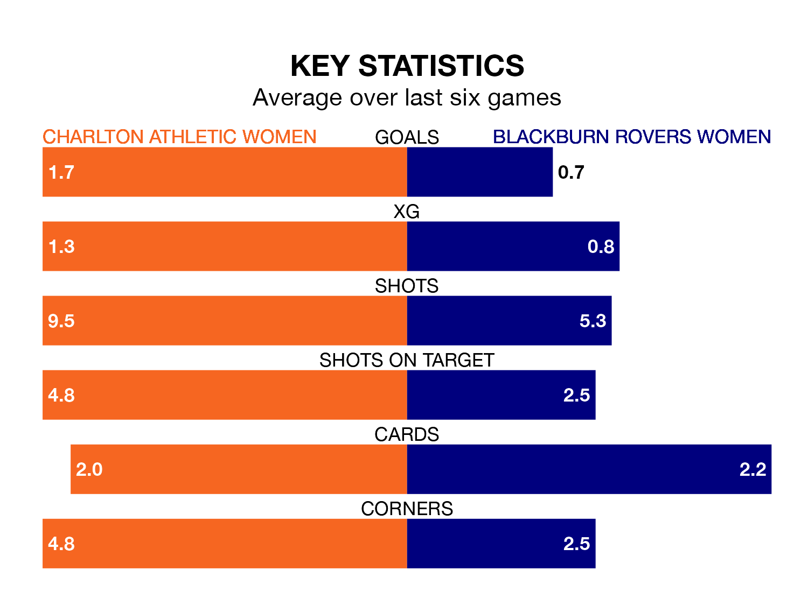

Two of the FA Women's Championship's meanest defences go head-to-head at the Oakwood on Sunday, when Charlton Athletic Women host Blackburn Rovers Women.
Only one side – Sunderland Women – has conceded fewer goals than Charlton Athletic to date: the home side have let in just 10 goals in 12 games.
Blackburn Rovers have conceded 13 goals in 10 games, giving them the fourth tightest back line so far this season.
Key to Charlton Athletic's home form has been Sian Rogers, who has allowed 0.59 goals past him per 90 minutes, compared to 1.2 for Alexandra Brooks in the opposite net.
Charlton Athletic are second in the table after 12 games, of which they have won six and drawn five, earning 23 points.
Blackburn Rovers are five places behind the home team in seventh, with five wins and five losses putting them on 15 points.
In Kayleigh Green, Charlton Athletic have one of the league's most on-form strikers so far this season. She has notched six goals in 11 appearances, to sit fourth in the scoring charts.
The visitors' top scorers, with two goals each, are Megan Hornby and Georgia Walters.
Charlton Athletic are in good form in the FA Women's Championship, with four wins and two draws from their last six games.
With two wins and four losses over that period, Blackburn Rovers' form is much worse – they have taken six points from 18, compared to the hosts' 14.
In the last three years, Charlton Athletic and Blackburn Rovers have played each other on seven occasions. Charlton Athletic won four of them and they drew three times.
On average, Charlton Athletic scored 1.6 goals and Blackburn Rovers 0.6 in those matches.
Their last meeting was on October 15, when Charlton Athletic won 1-0 away.
Charlton Athletic's last match was on December 17, a 2-2 draw against Sheffield United Women, with Angela Addison and Kiera Skeels getting the goals for Charlton Athletic.
Blackburn Rovers beat Sunderland Women 1-0 last time out, on November 12, with Chelsea Ferguson on the scoresheet.
Updated: 11:29, 08/01/24